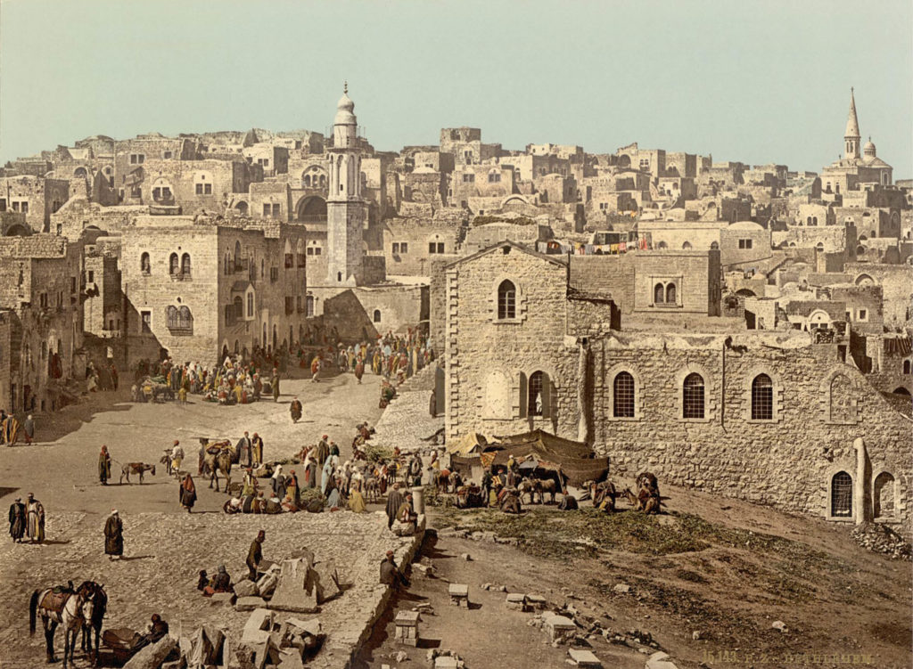
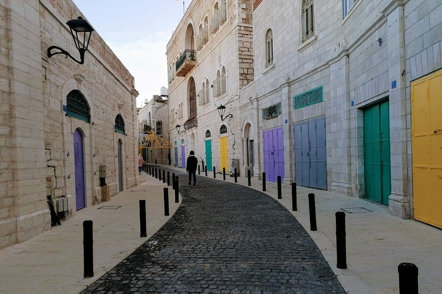
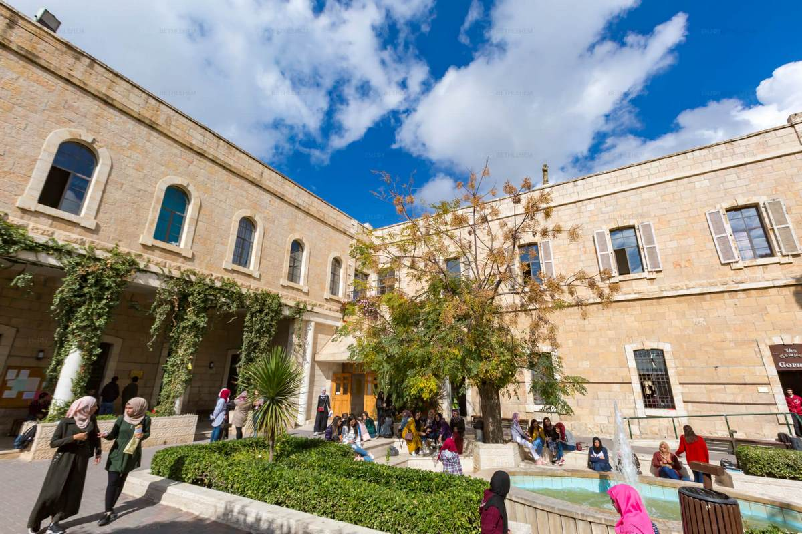

Hello, My name is Lawrence Sammour and this is my personal blog. Hover/click over the areas following my picture to reveal some personal information and fun facts about me
My Homeland
History
Bethlehem was mentioned around 1350 BC in the Tell al-Amarna letters, from the Egyptian governor of Palestine to the Pharaoh Amenhotep III. It was depicted as an important staging and rest stop for travelers from Syria and Palestine going to Egypt. The letters also signify that it was a border city of mid-Palestine and an outpost looking out towards the desert.
Nativity church
The Church of the Nativity where Jesus was born was first built around A.D. 330 by the first Christian Roman Emperor Constantine and was mostly destroyed during a Samaritan rebellion in A.D. 529. Soon after, the Byzantine Emperor Justinian rebuilt the church in a bigger, grander fashion—largely the structure that remains today.
Bethlehem Today
Today, Bethlehem is located 75 kilometers (47 mi) west of Amman. it is no longer a small farming town but a large city of about 100,000 people. It resides under Palestinian authority. It is an arabic Muslim Christian stronghold.

Hobbies play a very important role in my life. They occupy my mind when I'm free. Also, they make me happy. Hobbies are my escape from the real world and worries. Moreover, they make my life interesting and enjoyable. If I look at it, my hobbies are very useful for me. They teach me a lot of things about different stuff. They help in expanding my knowledge as well.
If I were to pick one favourite hobby of mine out of the many I have, I will definitely pick playing the guitar. I developed a taste for playing music when I was very young. The more my ears got used to the rhythm of music the more I wanted to learn new songs. playing the guitar is very uplifting and can make you feel a rush of beautiful emotions. I always play the guitar when I feel down or depressed. it makes me feel alive and motivated

If I were to pick one favourite hobby of mine out of the many I have, I will definitely pick playing the guitar. I developed a taste for playing music when I was very young. The more my ears got used to the rhythm of music the more I wanted to learn new songs. playing the guitar is very uplifting and can make you feel a rush of beautiful emotions. I always play the guitar when I feel down or depressed. it makes me feel alive and motivated

Another favorite hobby of mine would be debating. I have enrolled in the debate club of BU because I want my opinion to matter, and that's the main goal of debating. I have always fantasized about debating and making a difference by stating my own opinion in differnt matters. Debating for me has been an amazing journy to grow and express my personal issues regarding speific topics
My university
Bethlehem University is a place of higher learning that came into being in 1973 following the historic visit of Pope Paul VI to the Holy Land in 1964. This visit had been a great boost to the local people and stimulated religious fervour and Christian pride. The rather circuitous route from this visit to the establishment of Bethlehem University originated with the desire of Pope Paul VI to do something to help the Palestinian people, but it was very unclear what that would be. BU became the first registered university in the West Bank. Today, I study software engineering in BU where I learn about the construction of different software.
My course diary
Lab1
Today, we had an intorduction about practical html coding and how it works. We learnt that html is a markup language which works using different tags. each tag have a differnt purpose and most of the tags in html needs a counter closure tag. We tried different text formats like headings, paragraphs and learnt how to non-styled tables
Lab2
This week we used more html tags that we haven't tried before, and then we learnt a new piece of information that involves using ASCII code to make a specific reserved tag appear in the webpage
Lab3
In the third lab I learnt about forms and their differnt components like, textbox, lables, teaxtareas... etc. Then I created a page with three different forms
Lab4
In lab4 we started working on this blog that you are reading. We started putting some initial ideas, information and basic styling in it since we hadn't learnt much about css yet.
Lab5
This week we used styling to create a webpage about the qualities of an ideal city. We mainly used different position attributes that we had newly learnt from theoretical classes about css
Lab6
Lab number(6) was about creating an interface of what might be an online shop where you can order stuff. Only this time, we used new properties of grids and flexboxes which made dividing and styling the page to differnt components so much easier.
Lab7
The interesting part of this lab is working an adaptable webpage in which we used queries to change the properties of our work in the previous lab when shrinking the screen into different sizes
Lab8
Our most recent lab was about using javascript in our html code. We used javascript in differnt ways. We wrote lists in our documents, used arrays and created a dropdown menue which we couldn't do before learning JS
{kind=link}